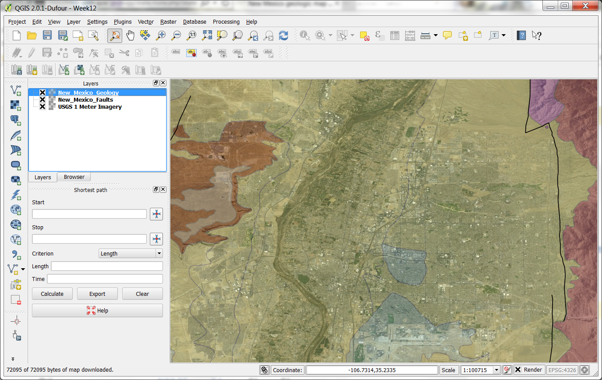
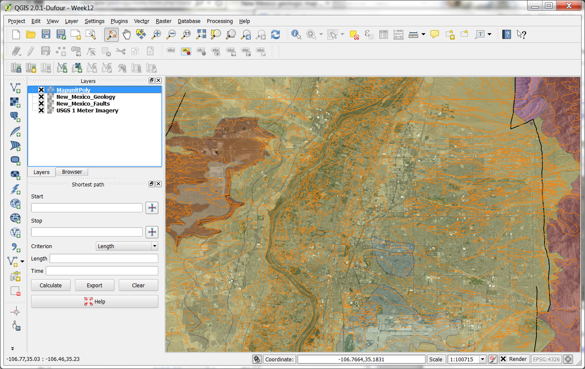
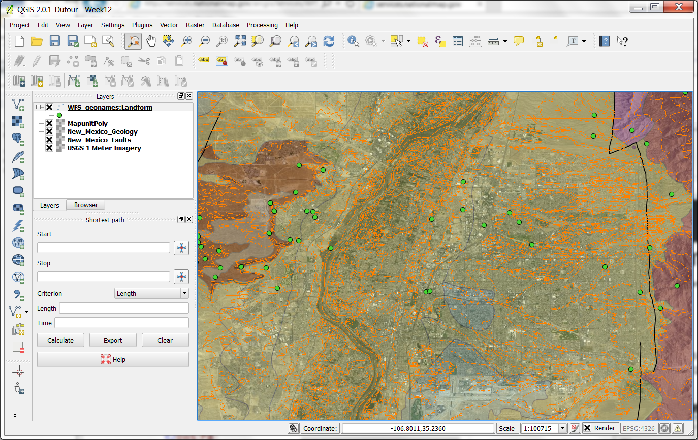
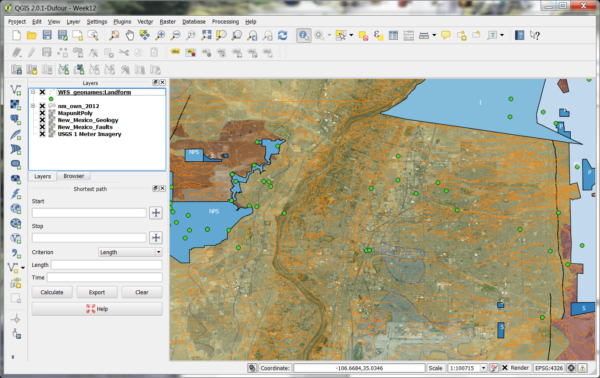
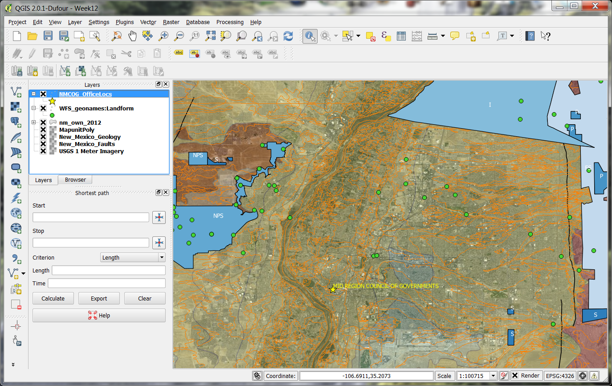

|
|
|---|---|
Layer |
Image |
| 1 meter resolution imagery
http://viewer.nationalmap.gov/example/services/serviceList.html |
 |
| Fault lines and Geology wms from the Bureau of Geology |  |
| Map unit poly units delineating Soil types from the NRCS Soils Data Mart WMS Service from
http://SDMDDattaAccess.nrcs.usda.gov/Spatial/SDM.wms?SERVICE=WMS&REQUEST=GetCapabilities |
 |
| Landforms from GeoNames wms layer |  |
| NM Land Ownership (2012) WFS layer from RGIS. Changed the classification to Blues and labeled each.
NPS = National Park Service S = State I = Native American FS = Forest Service |
 |
| rgis - cogs
Council of Governments |
 |